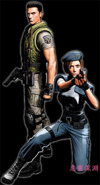
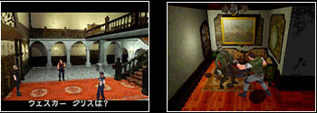

|
|
|
惡靈古堡∼致命寂靜 |
|||||||||||||
|
以下為FAMI通TV GAME綜合情報誌台灣版2005 31期節錄之內容。
1996年發售初代作品的「惡靈古堡」系列，明年就要迎接十週年的紀念。 CAPCOM也趁此機會為這個系列投出變化球，而且還是在掌上型主機上推 出！！ 以獨特的緊張感雨操作方式風靡一世。如今已儼然成為驚悚生存遊戲金字塔 的「惡靈古堡」系列第一代作品，竟然要在NINTENDO DS上浴火重生！在重 製的過程中，不但動作全面翻新，還充滿了新的陷阱與機關、全新的戰鬥方 式，以及全新的恐怖。這次我們將以遊戲概要以及更改部份的解說為中心， 為各位讀者送上最新的遊戲介紹。 |
 |
||||||||||||
|
 故事：1998年7月，位於美國中西部之城市Raccoon City郊外的Arklay山區，發生多起離奇案件， Raccoon City警局接獲指令，派遣特種部隊 S.T.A.R.S.的Bravo小隊前往現場，但載著這群 精銳的直昇機卻在森林中失去連絡。緊接著出動的Alpha小隊錢去搜索Bravo小隊的行蹤，但他們在山上看到的卻是 超乎想像的慘狀，就在這時他們遭受攻擊，最後來到山上的一棟洋房........ 用雙螢幕改變的「惡靈古堡」 觸控式螢幕之運用所造成的遊戲性變化，並非指局限於戰鬥部分。就連要解開機關或是引發各種動作的時候，也 可以看到跟原始版本的不同，其中甚至還包括了前所未見的情境。 小刀戰鬥 小刀戰鬥是運用觸控式螢幕的新要素之一。本作追加了這種會走過房門瞬間突然發生的戰鬥，讓玩家就算來到已 經把敵人打倒的地方也不能鬆懈。可以享受到以往系列作品中前所未有的臨場感。 （雜誌內容結束）
作品的三種模式： 1. 重生模式Rebirth Mode 依照主機DS的特殊性能，添加新要素。
2. 經典模式Classic Mode 以原本面貌重現的模式完整收錄，操作性更向上提升。
3. 無線功能Wireless 使用DS內建的Wireless無線功能，可以連結其他玩家，最多四個人共同遊戲！
|
|||||||||||||
惡靈深淵Biohazard Abyss http://98.to/coolbio